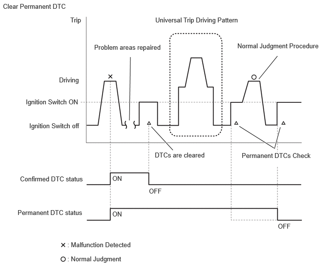
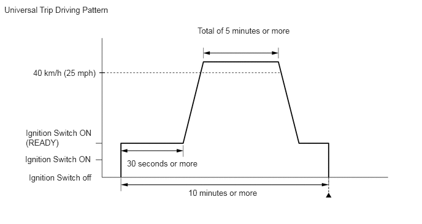

| Last Modified: 12-09-2025 | 6.11:8.1.0 | Doc ID: RM100000002K67R |
| Model Year Start: 2024 | Model: Tacoma HV | Prod Date Range: [03/2024 - ] |
| Title: HYBRID / BATTERY CONTROL: HYBRID CONTROL SYSTEM (w/o 130A Generator): DTC CHECK / CLEAR; 2024 - 2026 MY Tacoma HV [03/2024 - ] | ||
DTC CHECK / CLEAR
CHECK FOR DTCS
(a) Enter the following menus: Powertrain / Hybrid Control / Trouble Codes.
Powertrain > Hybrid Control > Trouble Codes
(b) Check the DTCs and Freeze Frame Data, and then write them down.
(c) Check the details of the DTCs.
|
Display Item |
Description |
|---|---|
|
Test Failed |
Shows the malfunction judgment results during the current trip. |
|
Pending |
Shows the malfunction judgment results up to now. (Indicates the possibility of a malfunction when no DTC is confirmed.) |
|
Confirmed |
Shows the DTCs confirmed up to now. (The number of current trips differs for each DTC.) |
- A pending DTC is a DTC that is stored in the hybrid vehicle control ECU assembly during the 1st trip when the 2 trip detection logic is used.
- Freeze frame data is stored for each of the latest result DTCs, pending DTCs and confirmed DTCs.
(1) Enter the following menus: Powertrain / Hybrid Control / Utility / Check Mode.
Powertrain > Hybrid Control > Utility
|
Tester Display |
|---|
|
Check Mode |
(2) Check items on the display and press "Next".
NOTICE:
- All the stored DTCs and Freeze Frame Data are cleared if the hybrid vehicle control ECU assembly is changed from normal mode to check mode. Before changing modes, always check and note any DTCs and Freeze Frame Data.
- Changing from normal mode to Check Mode function is not available when the ignition switch is turned to ON (READY).
- If a DTC is stored, check and note the DTC and Freeze Frame Data following the GTS display, then change from normal mode to check mode.
CHECK FREEZE FRAME DATA
(a) If a DTC is present, select it in order to display its Freeze Frame Data.
(b) Read the Freeze Frame Data recorded when the DTC was stored.
CHECK TIME STAMP
HINT:
By checking Time Stamp, the time and order in which DTCs were stored in an ECU can be checked.
(a) Enter the following menus: Health Check.
(b) Perform the following steps when the data setting screen is displayed.
(c) Select the systems for which to perform Health Check and check for Time Stamp data.
Selectable items:
- Powertrain
- Chassis
- Body
- Store All Data
(d) Select "Yes" when "Do you want to store time stamp data?" is displayed.
HINT:
If "Yes" is not selected, Time Stamp data will not be stored.
(e) After Health Check has completed, select "Time Stamp Data" to display the Time Stamp screen.
(f) Select the desired system from the drop-down list on the bottom of the Time Stamp screen.
(g) Check the order and time which DTCs were stored for the selected system.
CHECK FOR DTCS (CAN BUS CHECK)
(a) Enter the following menus: System Select / CAN Bus Check.
CAN Bus Check
(b) Check for communication malfunction DTCs.
HINT:
If DTCs related to a CAN communication are output, first troubleshoot and repair the CAN Communication System.
Click here
![2024 - 2026 MY Tacoma HV [03/2024 - ]; NETWORKING: CAN COMMUNICATION SYSTEM (except Gasoline Model): HOW TO PROCEED WITH TROUBLESHOOTING](../../../../stylegraphics/info.gif)
CHECK FOR DTCS (SYSTEMS EXCEPT HYBRID VEHICLE CONTROL ECU ASSEMBLY)
HINT:
The hybrid vehicle control ECU assembly maintains communication with other computers, including the motor generator control ECU, the ECM, skid control ECU assembly and power steering ECU assembly. Therefore, if the hybrid vehicle control ECU assembly outputs a warning, it is necessary to check and record the DTCs of all systems.
(a) If DTCs are stored, check the relevant systems.
HINT:
If DTCs for the CAN Communication System are present in addition to other DTCs, first troubleshoot and repair any malfunctions in the CAN Communication System.
CLEAR DTCS
NOTICE:
Clearing the DTCs will also clear the Freeze Frame Data.
(a) Enter the following menus: Powertrain / Hybrid Control / Trouble Codes.
Powertrain > Hybrid Control > Trouble Codes
(b) Clear DTCs and Freeze Frame Data.
Powertrain > Hybrid Control > Clear DTCs
CLEAR PERMANENT DTC
OUTLINE
- After clearing current DTCs using the GTS (or by disconnecting the cable from the negative (-) auxiliary battery terminal), permanent DTCs can be cleared when the universal trip is performed and then the system is determined to be normal for the relevant DTCs. The driving pattern to obtain a normal judgment is described under the "Confirmation Driving Pattern" for the respective DTC.
-
To clear permanent DTCs, all of the following conditions must be are met:
- There is a history that universal trip driving was performed.
- The vehicle has been judged as normal for 1 trips. (Normal judgment does not have to be performed in 1 consecutive trip, but normal judgment should occur in the latest trip.)
- No malfunctions are detected.
(a) Connect the GTS to the DLC3.
(b) Turn the ignition switch to ON.
(c) Turn the GTS on.
(d) Enter the following menus: Powertrain / Hybrid Control / Trouble Codes.
Powertrain > Hybrid Control > Trouble Codes
HINT:
If "YES" is displayed for the value of "PERMANENT" at the top right of the GTS screen, permanent DTCs are stored.
(e) Select the "Generic" tab.
(f) Check if permanent DTCs are stored.
HINT:
If permanent DTCs are not output, it is not necessary to continue this procedure.
(g) Clear the DTCs (even if no DTCs are stored, perform the clear DTC procedure).
Powertrain > Hybrid Control > Clear DTCs
NOTICE:
Do not clear the DTCs or disconnect the cable from the auxiliary battery terminal after performing this step.
(h) Perform the universal trip.
CAUTION:
When performing the driving pattern, obey all speed limits and traffic laws.
HINT:
The universal trip driving pattern and normal judgment procedure can be performed consecutively in the same driving cycle.
 (1) Turn the ignition switch to ON (READY) and wait for 30 seconds or more.
(2) Drive the vehicle at 40 km/h (25 mph) or more for a total of 5 minutes or more.
HINT:
It is possible to complete the drive pattern even if the vehicle decelerates to less than 40 km/h (25 mph) during the driving cycle provided that the vehicle is driven at 40 km/h (25 mph) or more for a total of 5 minutes.
(3) Allow 10 minutes or more to elapse from the time the ignition switch turned to ON (READY).
(i) Turn the ignition switch off and wait for 2 minutes or more.
(j) Perform the normal judgment procedure in the respective confirmation driving pattern of each output DTC.
HINT:
Do not turn the ignition switch off by mistake during this step.
(k) With the ignition switch ON (READY) and wait for 5 seconds or more.
(l) Turn the ignition switch off and wait for 2 minutes or more.
(m) Turn the ignition switch to ON.
(n) Enter the following menus: Powertrain / Hybrid Control / Trouble Codes.
Powertrain > Hybrid Control > Trouble Codes
(o) Check that the permanent DTCs have been cleared.
HINT:
If permanent DTCs are not output, it is not necessary to continue this procedure.
(p) Perform the normal judgment procedure in the respective confirmation driving pattern of each output DTC.
HINT:
Do not turn the ignition switch off by mistake during this step.
(q) With the ignition switch ON (READY) and wait for 5 seconds or more.
(r) Turn the ignition switch off and wait for 2 minutes or more.
(s) Turn the ignition switch to ON.
(t) Enter the following menus: Powertrain / Hybrid Control / Trouble Codes.
Powertrain > Hybrid Control > Trouble Codes
(u) Check that the permanent DTCs have been cleared.
|
|
|